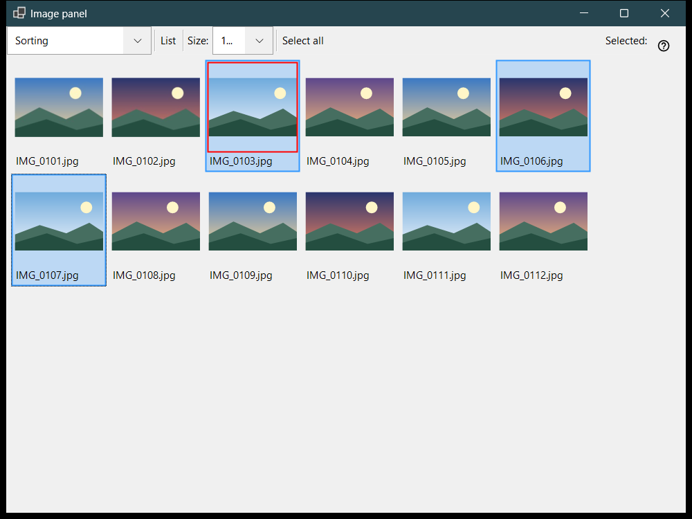
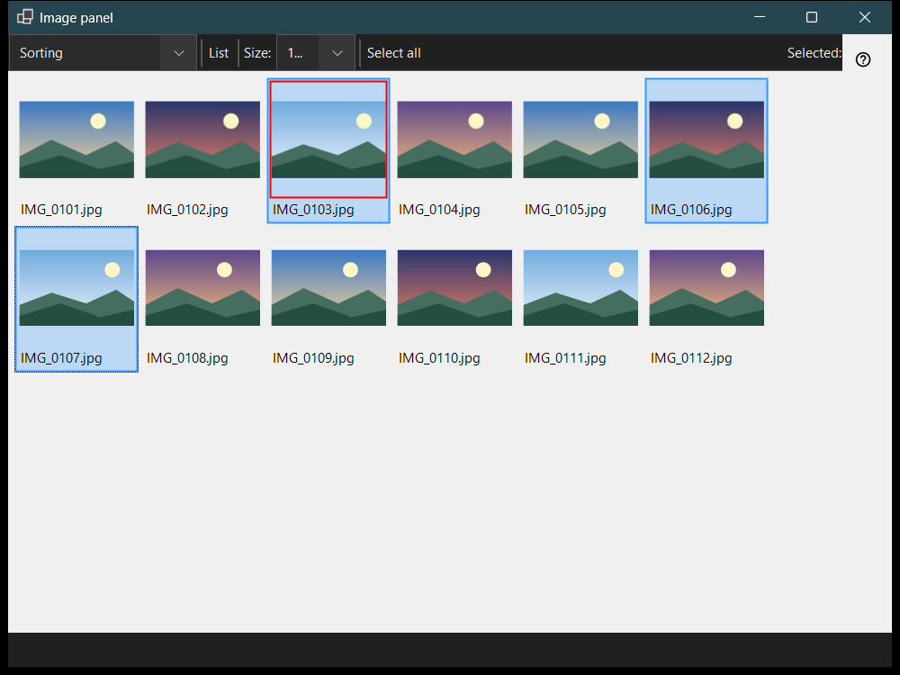

Image panel
What this is for
The image panel opens with F3 from the viewer and works in two modes chosen in the 'Panel mode' box: Sorting, a thumbnail grid of the current folder, and File manager, a browser with places, folders and file commands. Looking at files, selecting them and closing the panel do not change what the main window shows.


In this order
- Press F3 in the viewer.
- Choose the mode in 'Panel mode'.
- Select files: click, Shift+click for a range, Ctrl+click to toggle one, or drag a frame.
- In the sorting mode press 0-9 to move the selection to a destination folder, or Shift with a top-row digit to copy it; Ctrl+Z undoes the last operation.
- Double-click a file or press Enter to open it in the main window.
- Press Esc to cancel a running operation, then Esc again to close the panel.
The elements
Panel mode
'Panel mode' switches between Sorting and File manager. The sorting mode shows thumbnails of the current folder for quick moving and copying; the file manager browses any folder and offers file commands.
Size, layout and selection
The slider (Size:) sets the size of the thumbnails, 'Tiles' and 'List' switch the layout (Ctrl+L), and the selection counter shows how many files are selected out of the total.
Selecting and sorting
Click selects, Shift+click selects a range, Ctrl+click toggles one file and dragging draws a selection frame. Ctrl+A selects all, Ctrl+Shift+A clears the selection, Ctrl+I inverts it, Space marks a file, and the arrows, Home, End, PgUp and PgDn move around. The digits 0-9 move the selection to the destination folder of that key, Shift with a top-row digit copies it, Del deletes it and Ctrl+Z undoes the last operation.
Filter and hidden files
The content filter chooses Media files, Media and documents or All files, and 'Hidden' shows or hides hidden files. 'Settings..' opens the Settings window on the File manager page, where the display mode, the filter, the places and the remembered sort order are set.
File commands
Ctrl+C, Ctrl+X and Ctrl+V copy, cut and paste, F2 renames, Ctrl+Shift+N creates a folder, Del and Shift+Del delete the selected items and Alt+Enter shows the properties. Copying or moving between resources goes through this PC.
Create ZIP
'Create ZIP' packs all selected folders and files into one archive. Deleting the originals is off by default and is allowed only after the archive is verified and published.
Extract here
'Extract here' works on one selected archive: folders and ordinary files are kept, the original archive stays in place and extracted programs are never run. Esc cancels the operation.